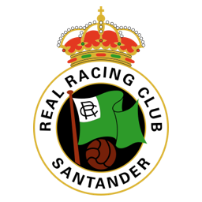
RAClub fundador de LaLiga
Real Racing Club
1913
Año de fundación del club
Racinguistas / Verdiblancos
Una breve historia
Fundado en 1913, el Real Racing Club de Santander fue uno de los diez clubes fundadores de la Primera División española en 1929. Con una gran afición en Cantabria, ha vivido etapas en todas las categorías del fútbol español a lo largo de su historia.
Fieles a los colores
de Santander
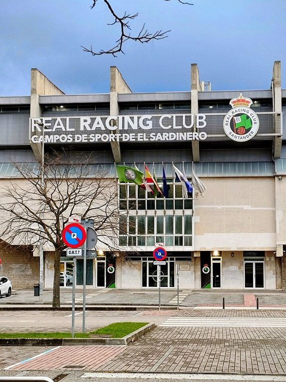
📷Foto pendiente
(real-racing-club-1.jpg)';" />
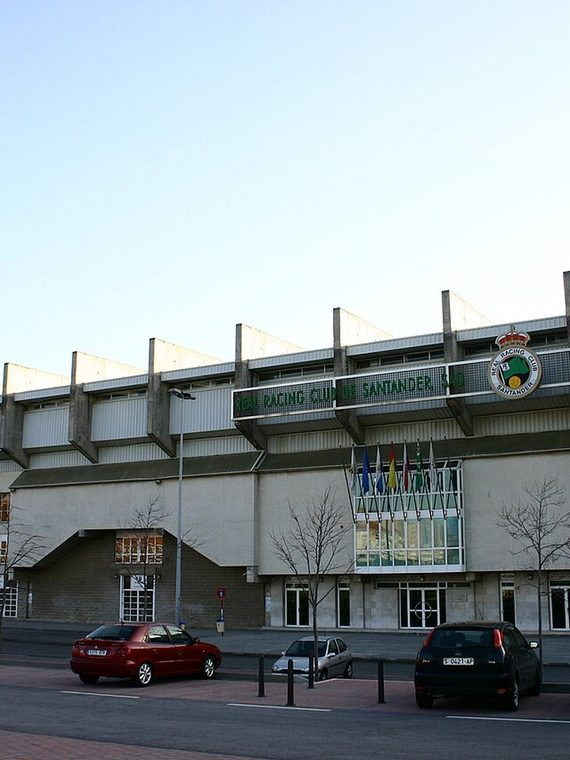
📷Foto pendiente
(real-racing-club-2.jpg)';" />
Títulos y logros
Momentos que hicieron historia
★
Miembro fundador de LaLiga en 1929
★
Cuartos de final de la Copa UEFA en 1970/71
★
Uno de los clubes con más historia del norte de España
La rivalidad
El duelo que enciende a la afición
Temporada 2026 / 27
Plantilla del primer equipo
Datos de ejemplo — reemplázalos con la plantilla real en data/teams.js.
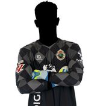
🧑';" /> Eriksson Portero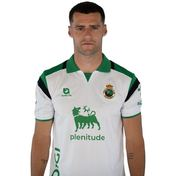
🧑';" /> Mantilla Defensa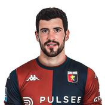
🧑';" /> Aaron Defensa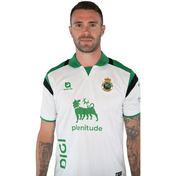
🧑';" /> Manu H. Defensa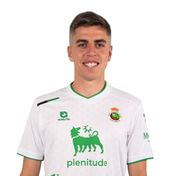
🧑';" /> Iñigo Defensa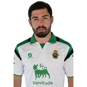
🧑';" /> Guliashvili Delantero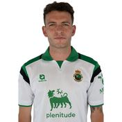
🧑';" /> Vicente Delantero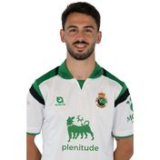
🧑';" /> Andrés Delantero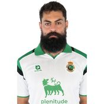
🧑';" /> Villalibre Delantero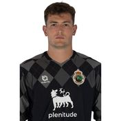
🧑';" /> Agirrezabala Portero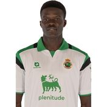
🧑';" /> Maguette Centrocampista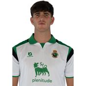
🧑';" /> Facu Defensa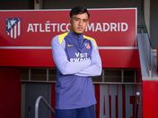
🧑';" /> Iker Luque Centrocampista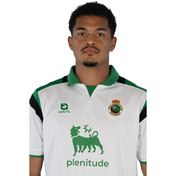
🧑';" /> Pedro Defensa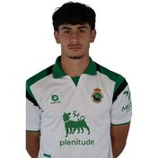
🧑';" /> Castellanos Centrocampista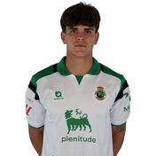
🧑';" /> Hugo Centrocampista